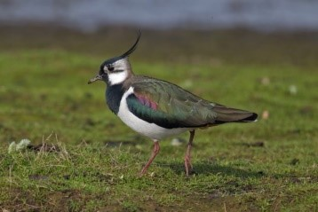
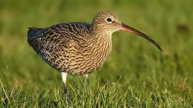
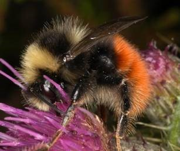

Red Grouse

They live in and eat heather, as well as seeds, berries and insects. Their populations are declining, mainly because they are being hunted for sport.
Lapwing

This black and white bird has a tuft on the top of its head and is often seen around farms. You might hear it wailing in grassy fields in the Peak District.
Curlew

This bird lives on grasslands and is generally seen around the start of Spring. It prods its long curved beak into the soil to eat worms.
Bumblebee

Some species of bumblebee feed on Bilberry, clover and heather. They nest on the ground, using abandoned animal burrows.